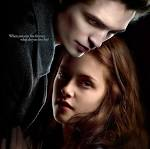

At the heart of Twilight is the spellbinding romance between Bella Swan and Edward Cullen—two individuals from entirely different worlds whose fates become irreversibly intertwined.
Bella Swan is the quiet, introverted seventeen-year-old protagonist of Twilight. Moving from the sunny deserts of Phoenix, Arizona, to the perennially overcast town of Forks, Washington, she expects nothing more than a dull transition. Highly observant, slightly clumsy, and fiercely independent, Bella prefers to fade into the background. However, her life changes irrevocably when her path crosses with the mysterious Edward Cullen, drawing her into a dangerous yet captivating supernatural world. Edward Cullen is the enigmatic, breathtakingly handsome vampire protagonist of the Twilight saga. Frozen eternally at the age of seventeen, Edward has lived as a "vegetarian" vampire—abstaining from human blood—alongside his adopted family in Forks, Washington, for decades. Behind his guarded, brooding demeanor and striking topaz eyes lies a deeply protective and tortured soul. His carefully controlled existence is completely upended when he meets Bella Swan, a human whose intoxicating presence threatens his self-control and captures his heart.